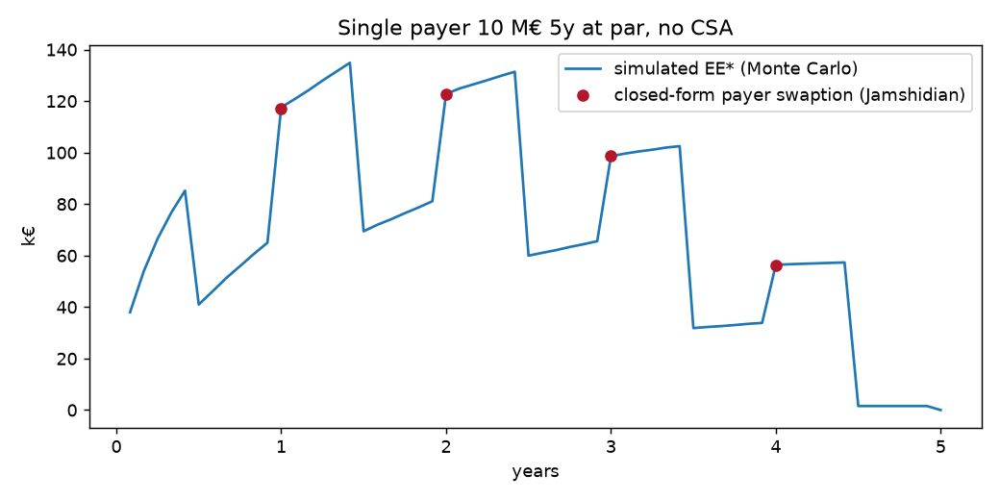
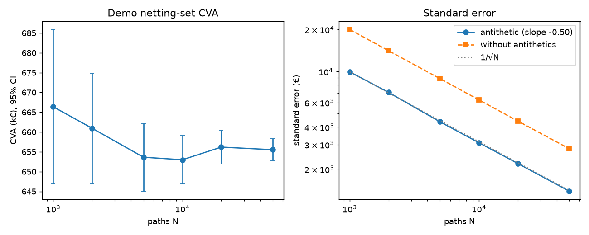
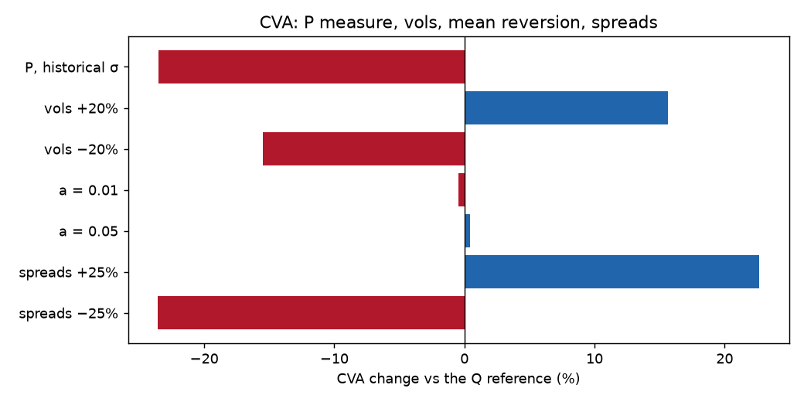
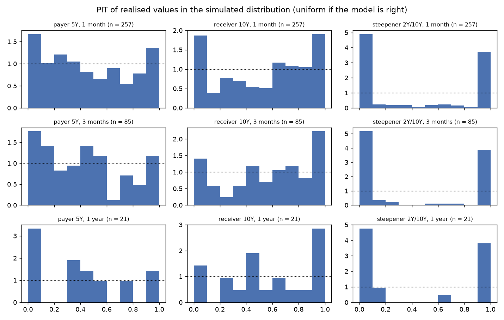
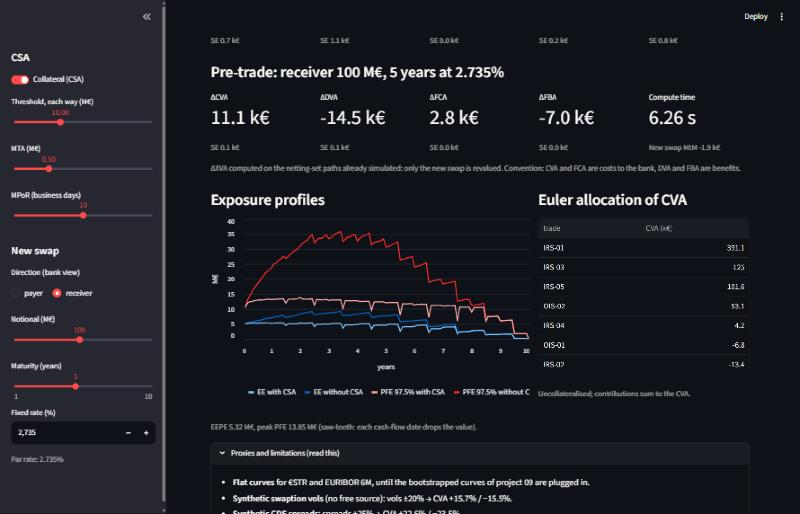

Self-review by the author. An independent review is still needed before any use beyond demonstration. All market data are synthetic or public (ECB); the counterparty is fictitious.
| Check | Result | Verdict |
|---|---|---|
| Prices (IRS, OIS, swaptions, CDS) against QuantLib 1.44 | errors < 1e-8 of notional; CDS < 0.1 bp | validated |
| EE* of a single swap against the closed-form swaption (Jamshidian) | max error 0.46 bp of notional, below the standard error (0.87 bp) | validated |
| Monte Carlo convergence | standard error in N−0.504, antithetic gain ×4.1 | validated |
| CRN sensitivities | sum of pillar deltas = parallel to within 1 €, SE < 1% | validated |
| Point-in-time backtest, directional positions | tails too fat at 1 month (KS p ≤ 0.005) | known limit |
| Point-in-time backtest, steepener | clear rejection at every horizon | out of scope |
| Sensitivity to unobservable parameters | vols ±20% → CVA ±16%; spreads ±25% → CVA ±23% | proxies to replace |
The engine is fit for its intended use: CVA/DVA/FVA and pre-trade for a netting set of directional EUR swaps. It is not suited to a portfolio whose main risk is the slope of the curve.
| Demo netting set (k€, SE) | CVA | DVA | FCA | FBA |
|---|---|---|---|---|
| No CSA | 659.7 (3.2) | 227.8 (2.4) | 81.2 (0.3) | 34.2 (0.4) |
| CSA (threshold 10 M€, MTA 0.5 M€, MPoR 10 d) | 446.3 (0.7) | 159.5 (1.1) | 57.0 (< 0.1) | 23.5 (0.2) |
The CSA removes 32% of the CVA. Pre-trade (ΔXVA of a new swap on the paths already simulated): 1 to 3 s.
41 automated tests (pytest, about 45 s), including: martingale E[D] = P(0, t); ZC option and Jamshidian swaption against QuantLib; IRS and OIS against QuantLib; E[D·V(t)] equal to the value of remaining cash flows, including mid-period; PFE equal to the closed-form quantile within the binomial interval; sub-additive netting; perfect collateral at zero MPoR → 0; sum of Euler allocations = CVA; pre-trade = full recompute; bank CVA = counterparty DVA.

Error found and fixed: the formula for the running €STR leg given in the project sheet (exp(∫r)·P(t, e) − P(t, e)) is wrong; the correct value is exp(∫st r) − P(t, e). The martingale test caught it.


A CVA computed under P would be a quarter lower: the implied vol premium weighs as much as a 25% shock to spreads. The two most influential inputs (swaption vols and CDS spreads) are currently synthetic.
Daily ECB AAA curves 2004-2026 (5,665 days). At each date, σ(P) is calibrated on the previous year (no look-ahead); the distribution of the value at the horizon is simulated from that day's curve and the realised value is ranked in it (PIT). Non-overlapping windows. Kolmogorov-Smirnov test of uniformity.
| Horizon | Windows | KS power | Payer 5Y | Receiver 10Y | Steepener |
|---|---|---|---|---|---|
| 1 month | 257 | 55% | p 0.005 | p < 0.001 | p < 0.001 |
| 3 months | 85 | 21% | p 0.02 | p 0.03 | p < 0.001 |
| 1 year | 21 | 10% | p 0.08 | p 0.14 | p 0.001 |

Directional positions: PITs pile up at both ends (6 to 10% of realisations below the 2.5% quantile at 1 month). Historical tails are fatter than the Gaussian and σ(P) on a rolling year reacts late (2008, 2022). Steepener: with a single factor, 2-year and 10-year rates move together; the model sees almost no risk on a DV01-neutral position.
| Limitation | Measured or expected impact |
|---|---|
| Flat €STR / EURIBOR 6M curves (until the curves project is plugged in) | smoothed profiles; no initial slope |
| Synthetic swaption vols | ±20% → CVA +15.7% / −15.5% |
| Synthetic CDS spreads | ±25% → CVA +22.6% / −23.5% |
| One factor | slope risk invisible (backtest rejected) |
| Gaussian tails | PFE and EE understated in stress regimes |
| MTA added to the threshold, cash flows during the MPoR ignored | documented approximation; second-order effect on EE |
| No wrong-way risk, no seasoned trades, no TARGET2 schedule | not quantified |
| BA-CVA: risk weights copied from memory | to check against MAR50.16 before any regulatory use |

Reproduce: pip install -e .[test,rapport], pytest, python -m xva.rapport, streamlit run app.py.